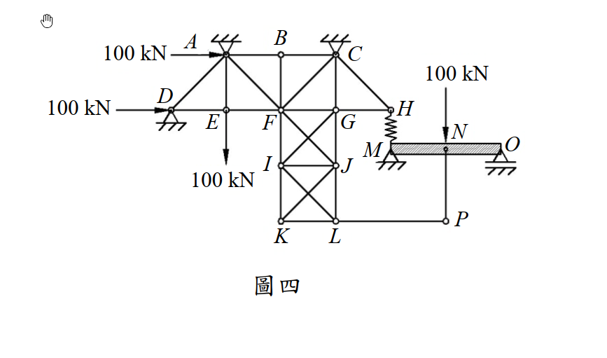

考題編號：SA-2016-4
主分類： SA-U1-1-1 桁架分析
副分類： 無
分析法： 節點平衡法 (Method of Joints)
標籤： 零力桿件 桁架 節點平衡
1. 原始題目重述 (Problem Restatement)
圖四右側 MNO 梁在 M 點以彈簧與左側桁架的 H 點連接，彈簧之彈簧常數為 k。在圖示的載重下，試判斷此構造中，那些桿件為零桿（zero-force member）。（25 分）
結構幾何與載重特徵：
- 左側為一複雜桁架系統，右側為一 MNO 梁。
- A、C、D、M、O 皆設有支承。
- A、D 點承受 100 kN 向右水平力。
- E、I、N 點承受 100 kN 向下垂直力。
- 節點 B 僅連接 AB、BC、BF 三桿。
- 節點 P 懸空，僅連接 LP、NP 兩桿。

圖說：左側為含 X 型交叉斜撐之桁架，右側為 MNO 梁。H 點與 M 點間有彈簧。P 點為懸空節點。
2. 考題核心精神與出題者意圖 (Core Concepts & Examiner's Intent)
核心觀念： 零力桿件（Zero-Force Member）的視覺判斷法則。
出題者意圖： 這是一道經典的「找碴題」。出題者畫了一個看起來極度複雜的桁架，加上彈簧、梁以及多個載重，試圖讓考生眼花撩亂。但只要熟記並冷靜應用零力桿件的兩大法則，即可在幾秒鐘內找出答案，完全不需要動筆計算反力或解聯立方程式。
兩大基本法則：
- 二桿節點法則：無外力且無支承的節點，若僅連接兩根非共線桿件，則此兩桿皆為零力桿。
- 三桿節點法則：無外力且無支承的節點，若連接三根桿件且其中兩根共線，則第三根不共線桿件為零力桿。
關鍵陷阱：
- N 點與 P 點的連接： MNO 梁在 N 點承受 100 kN 載重，許多考生會直覺認為 NP 桿會將此力傳導至桁架。但實際上，P 點完全沒有其他垂直約束或桿件來抵抗這個力。如果 NP 桿有受力，P 點就無法平衡。因此，NP 桿必定是零力桿，這是一個「無效懸吊」的陷阱。
3. 解題戰略地圖與陷阱分析 (Strategic Roadmap & Trap Analysis)
作戰計畫：
- 掃描外圍與懸空節點：尋找「無外力、無支承」的邊緣節點。
- 分析 P 點（二桿節點）：確認 LP 與 NP 的受力狀態。
- 分析 B 點（三桿節點）：確認 BF 的受力狀態。
- 移除零力桿後的二次掃描：檢查移除上述桿件後，是否會產生新的零力桿。
3.5 變數層次分析 (Variable Hierarchy Analysis)
複習提示：第一次解題後，在每個卡住的知識點旁標記
⚠；第二次複習時只看有⚠的項目。
最終目標
找出所有零力桿件 (Zero-Force Members)
L1：題目直接給定
| 符號 | 狀態 | 說明 |
|---|---|---|
| 節點 P | 無外力、無支承 | 僅連接 LP、NP 兩桿 |
| 節點 B | 無外力、無支承 | 連接 AB、BC (共線) 與 BF 三桿 |
L2：需知識點推導
零力桿法則應用
| 節點 | 平衡方程式 | 結論 | 卡關? |
|------|-----------|------|:-----:|
| P 點 | $\Sigma F_x = 0$, $\Sigma F_y = 0$ | $F_{LP} = 0$, $F_{NP} = 0$ | |
| B 點 | $\Sigma F_y = 0$ (垂直於共線桿) | $F_{BF} = 0$ | |
L3：深層知識（不懂就卡住）
| 知識點 | 說明 | 卡關? |
|---|---|---|
| 「無效傳力」陷阱 | N 點雖有載重，但因 P 點自由，NP 桿無法產生反作用力，故 NP 不受力，載重 100 kN 完全由梁 MNO 承受。 |
4. 步驟化詳細計算過程 (Step-by-Step Detailed Calculation)
本題只需透過節點平衡的觀念進行判斷，無需數值計算。
Step 1：判斷節點 P (應用二桿節點法則)
- 觀察： 結構右下角的節點 P。
- 條件： 節點 P 僅連接兩根桿件（水平桿 LP 與垂直桿 NP）。節點 P 上沒有作用任何外部載重，也沒有任何支承。
- 推導：
- 水平方向力平衡：$\Sigma F_x = 0 \Rightarrow F_{LP} = 0$
- 垂直方向力平衡：$\Sigma F_y = 0 \Rightarrow F_{NP} = 0$
- 結論： LP 桿與 NP 桿為零力桿。
Step 2：判斷節點 B (應用三桿節點法則)
- 觀察： 結構頂部的節點 B。
- 條件： 節點 B 連接三根桿件（AB、BC、BF）。其中 AB 桿與 BC 桿共線（皆為水平）。節點 B 上沒有作用任何外部載重，也沒有任何支承。
- 推導：
- 取垂直於共線桿（即垂直向）的力平衡：$\Sigma F_y = 0 \Rightarrow F_{BF} = 0$
- 結論： BF 桿為零力桿。
Step 3：進行二次掃描 (檢查是否有連鎖效應)
- 將已確認的零力桿 (LP, NP, BF) 從結構中假想移除，檢查其他節點。
- 節點 L： 移除 LP 後，剩下 KL (水平)、JL (垂直) 與 IL (斜向)。由於包含斜桿且大於兩桿，無法判定為零力桿。
- 節點 F： 移除 BF 後，仍有 AF, EF, FG, FI, FJ, CF 多桿交會，無法判定。
- 節點 E、I： 皆有外部垂直載重 100 kN 作用，因此連接的垂直桿 AE、FI 等必然會承受內力，非零力桿。
- 節點 H： 連接 GH、CH 及彈簧 HM。雖然結構複雜，但無法直接判斷為零。
- 支承節點 A, C, D： 具有支承反力，無法直接應用零力桿法則判斷相鄰桿件。
- 經過二次掃描，未發現新的零力桿。
5. 結論與最終答案 (Conclusion)
本構造中，零力桿件共有 3 根，分別為：
- BF 桿
- LP 桿
- NP 桿